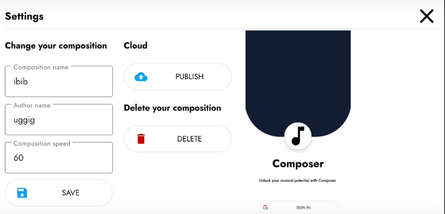

After entering as guest the following page will be shown:
On the main display all symphonies are shown. All published symphonies are shown inside "All symphonies" list. Your local symphonies are shown under "My symphonies" button. You can search all symphonies by clicking on the search button or add a symphony by clicking on plus button.
While adding symphony you must fill in the form which consists of symphony name, authors name, default instrument and speed of composition in beats per minute. Default instrument will be used for sounds of the piano keys and playing the symphony.
Composition view consists of piano and the sheet which is invisible until a key is pressed. Piano keys can be scrolled vertically to expand the keyboard and horizontally to change input keys. Toolbar consists of buttons for controlling the drawing of the notes. Buttons on the left control instruments. With up and down arrow you can switch instruments and with plus arrow you can add an instrument and choose a sound on popup dialog. Right buttons are used to draw notes. With a single arrow you can move across a single instrument. You can control which note is drawn on the canvas with double arrow (eg. sixteenth note). Each note can be edited by pressing on it. You can play a symphony by clicking on the play button. By clicking on the settings you can edit the name, author name and speed of the symphony, as well as delete the symphony.
After logging on with the google account you can view your profile, like symphonies and publish them for the world to see.